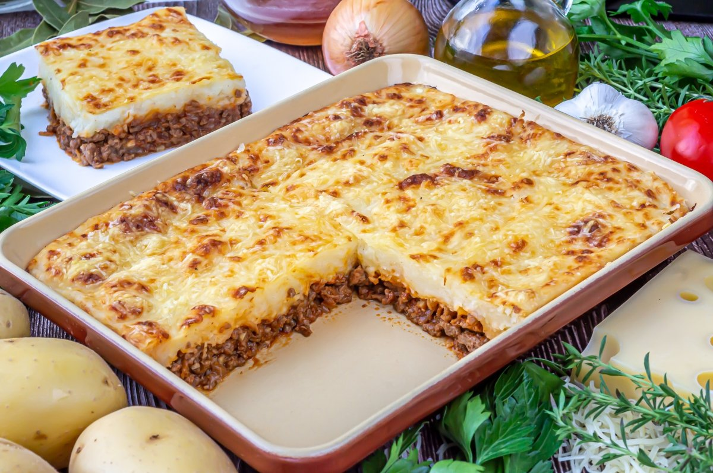
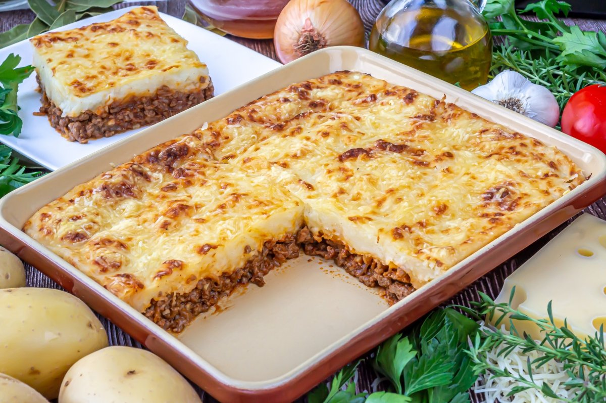

Pastel de papa
 

Descripcion
Una receta secilla y con personalida propia. El pastel de papa, es un clasico de los hogares argentinos, es a la vez un plato muy popular y dificil de conseguir en restaurantes
Ingredientes
- 1kg. de papas
- 1/2kg. de carne picada de ternera
- 1 cebolla
- 1/2 pimiento morron
- 2 dientes de ajo
- ajo en polvo
- pimenton
- 25g. de manteca
- 1 chorrito de leche
- nuez moscada
- aceite
- sal
- pimienta
Pasos
- cortar las papas en cubos y ponerlas a hervir con sal
- picar la cebolla, el ajo y el pimiento morron
- calenetar el aceite en una olla o sarten y sofreir la cebolla, el pimineto y los ajos
- cuando la cebolla esta transparente, agregar la carne y sofreirla mientras se deshace con una cuchara
- salpimentar, agregar la pastilla de caldo, el ajo en polvo, el pimenton y cocer la carne 15min
- una vez las papas esten hervidas, hacer en caliente un pure con la manteca y la leche. salpimentar
- poner en una fuente para horno una base de pure, agregar por encima la carne (dejar que se entibie un poco) y colocar otra capa de pure. Para distribuirlo, se moja la cocuhar en agua fria
- llevar al horno fuerte o gratinador unos 15-20 min. o hasta que la parte de arriba este crocante